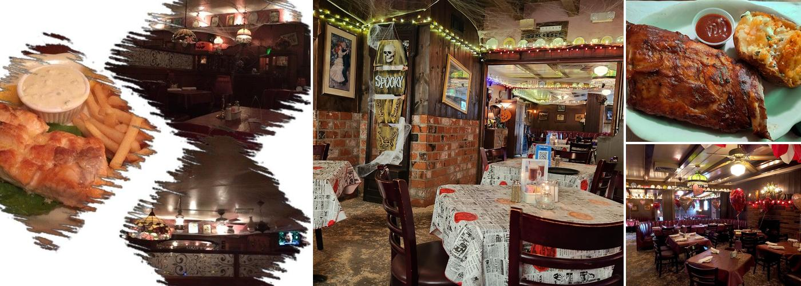
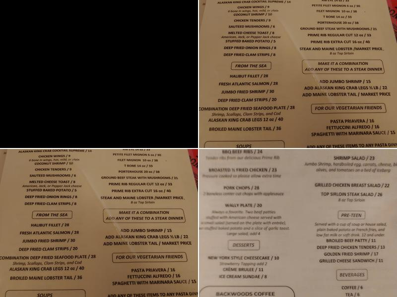
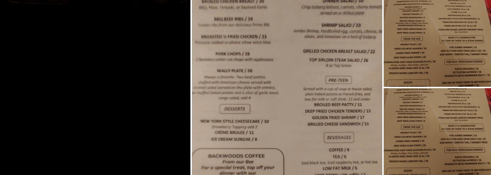
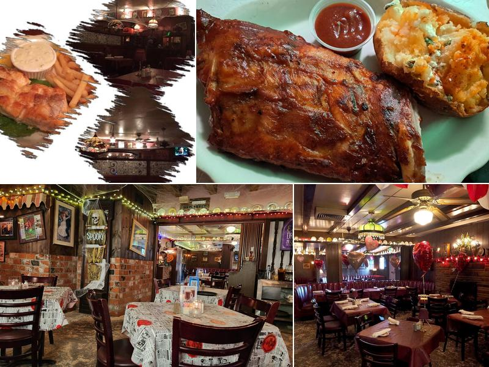

Pub favorites
Clear, mobile-friendly section built from public listing/search evidence and ready for owner-approved details.
Santa Clarita restaurant
Backwoods Inn is a Santa Clarita restaurant with public listings suggesting pub offerings. The customized site uses public search/listing evidence, real listing/photo sources when available, and a unique layout focused on turning map/search traffic into calls or visits.




Clear, mobile-friendly section built from public listing/search evidence and ready for owner-approved details.
Clear, mobile-friendly section built from public listing/search evidence and ready for owner-approved details.
Clear, mobile-friendly section built from public listing/search evidence and ready for owner-approved details.
Clear, mobile-friendly section built from public listing/search evidence and ready for owner-approved details.
Conversion path
Location: Santa Clarita
Suggested CTA: Call, directions, booking/request form, and a short owner-approved menu/service list.
Demo URL: https://noelsopenclaw.github.io/scv-demo-backwoods-inn/
Research notes
No-website check: Checked public web search results and OSM no-website tag. No apparent official/dedicated website was found in top public results; directory/social/order pages may exist. Owner confirmation still required.